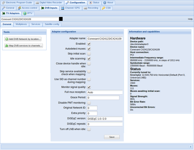
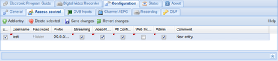
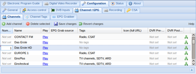

Tvheadend
Dieser Artikel wurde für die folgenden Ubuntu-Versionen getestet:
Ubuntu 16.04 Xenial Xerus
Ubuntu 14.04 Trusty Tahr
Ausbaufähige Anleitung
Dieser Anleitung fehlen noch einige Informationen. Wenn Du etwas verbessern kannst, dann editiere den Beitrag, um die Qualität des Wikis noch weiter zu verbessern.
Anmerkung: Ergänzungen ausdrücklich erwünscht.
Zum Verständnis dieses Artikels sind folgende Seiten hilfreich:
Tvheadend  ist ein TV-Streaming-Server für Linux, welcher DVB-S, DVB-S2, DVB-C, DVB-T, ATSC, IPTV und Analog-Video unterstützt. Die Konfiguration erfolgt über ein Webinterface, welches sich im Browser aufrufen lässt. Die Wiedergabe erfolgt dabei z.B. über Kodi. Es ist möglich, Tvheadend so zu konfigurieren, dass man mit jedem PC im Netzwerk das TV-Signal des Servers empfangen kann.
ist ein TV-Streaming-Server für Linux, welcher DVB-S, DVB-S2, DVB-C, DVB-T, ATSC, IPTV und Analog-Video unterstützt. Die Konfiguration erfolgt über ein Webinterface, welches sich im Browser aufrufen lässt. Die Wiedergabe erfolgt dabei z.B. über Kodi. Es ist möglich, Tvheadend so zu konfigurieren, dass man mit jedem PC im Netzwerk das TV-Signal des Servers empfangen kann.
Hinweis:
Installation¶
Tvheadend ist nicht in den offiziellen Paketquellen enthalten.
Seit Version 4 nutzt Tvheadend Bintray als Dienst für seine Paketquellen. Falls man früher schonmal eine andere Paketquelle verwendet hat, muss diese davor entfernt werden.
Als nächstes muss der Schlüssel der Bintray-Paketquelle importiert werden:
sudo apt-key adv --keyserver hkp://keyserver.ubuntu.com:80 --recv-keys 379CE192D401AB61
Danach muss Bintray als Quelle hinzugefügt und die Paketliste aktualisiert werden. Davor muss man sich noch für einen Entwicklerzweig entscheiden, welche man nutzen möchte:
stable - für die letzte offizielle Version
testing - für die Nightly-Builds vom stabilen Zweig (Fehlerbehebungen werden hier schneller zur Verfügung gestellt, als im "stable"-Zweig)
unstable - für die Unstable-Builds vom master Zweig (nicht für den produktiven Einsatz geeignet)
master - für die Nightly-Builds vom master Zweig (nicht für den produktiven Einsatz geeignet)
obsolete - historische Pakete von der Version 3.4
Nun führt man folgende Befehle aus und ersetzt "KOMPONENTE" durch den Namen des gewählten Entwicklerzweigs:
Hinweis!
Zusätzliche Fremdquellen können das System gefährden.
sudo apt-add-repository "https://dl.bintray.com/tvheadend/deb KOMPONENTE" sudo apt-get update
Anschließend kann Tvheadend installiert [2] werden:
tvheadend (ppa)
 mit apturl
mit apturl
Paketliste zum Kopieren:
sudo apt-get install tvheadend
sudo aptitude install tvheadend
Während der Installation wird für die Tvheadend-eigene Benutzerverwaltung ein Administrator angelegt. Dies kann auch nach der Installation geändert werden mittels [3][4]
sudo dpkg-reconfigure tvheadend
Manuell¶
Gerade da die Version in den Paketquellen oft veraltet ist, ist es ratsam, Tvheadend manuell zu kompilieren.
build-essential git pkg-config libssl-dev bzip2 wget libavahi-client-dev zlib1g-dev libavcodec-dev libavutil-dev libavformat-dev libswscale-dev libavresample-dev dvb-apps
mit apturl
Paketliste zum Kopieren:
sudo apt-get install build-essential git pkg-config libssl-dev bzip2 wget libavahi-client-dev zlib1g-dev libavcodec-dev libavutil-dev libavformat-dev libswscale-dev libavresample-dev dvb-apps
sudo aptitude install build-essential git pkg-config libssl-dev bzip2 wget libavahi-client-dev zlib1g-dev libavcodec-dev libavutil-dev libavformat-dev libswscale-dev libavresample-dev dvb-apps
Anschließend kann die aktuellste Version von Github geholt werden und das Programm kompiliert und installiert werden:
git clone https://github.com/tvheadend/tvheadend.git make sudo make install
Wichtig ist bei der manuellen Installation außerdem ein entsprechendes Start-Skript zu erstellen.
Tvheadend konfigurieren¶
Um Tvheadend zu konfigurieren, muss folgende Webadresse mit dem Browser geöffnet werden: http://localhost:9981, wobei die bei der Installation festgelegten Login-Daten abgefragt werden.

Sendersuche¶
Um die verfügbaren Sender zu suchen, klickt man auf den Reiter "Configuration", "DVB Inputs" und "TV Adapters". Im linken Dropdown-Menü "General" wählt man nun die TV-Karte aus. Auf der linken Seite unter "Tools", "Add DVB Network by location" kann man den richtigen Satelliten auswählen. Unter "Adapter configuration" macht man einen Haken bei "Enabled", "Autodetect muxes" und klickt auf "Save". Nun beginnt die Sendersuche. Auf der rechten Seite kann man nun den Fortschritt der Sendersuche verfolgen.
Während des Sendersuchlaufs erscheinen die gefundenen Sender unter dem Reiter "Services". Dort kann man dann auch auswählen, welche Sender übernommen werden sollen. Nach dem Abschluss des Suchlaufs, klickt man auf den Button "Map DVB services to channels", damit werden alle ausgewählten Sender in die Senderliste übernommen. Dieser Vorgang dauert einen Moment, wobei der Systemlog unten auf der Seite angezeigt werden kann. Sobald im Systemlog oder im Reiter Status
Datum Uhrzeit serviceprobe: Now idle
erscheint, ist der Vorgang abgeschlossen.

Sender auswählen¶
Nun sollte unter Status je nach Empfang ungefähr 100 Muxes und 1500 Sender erscheinen. Wenn dem nicht so ist, sollte man das Kabel und die Konfiguration prüfen. Um nun die Sender auszuwählen, die man haben möchte, klickt man im Gleichen Reiter wie zuvor auf "Services" und sucht sich per Browsersuche alle Sender einzeln und markiert sie. Mehrere Sender können mit dem zusätzlichen Drücken von Strg ausgewählt werden. Wenn man alle hat, drückt man auf Map "Selected" und danach auf "Save changes".
Hinweis:
Bei mehreren TV-Karten muss diese Prozedur für alle weiteren wiederholt werden, auch wenn es die gleichen Sender sind!
Reihenfolge der Sender festlegen¶

Da es bei mehr als 1000 Sendern sehr unpraktisch ist, einen einzelnen Sender zu finden, kann man die Reihenfolge im Backend festlegen. Dazu klickt man auf den Reiter "Channels" wo man in der Linken Spalte eine Sendernummer eingeben kann, die dann auch in Kodi übernommen wird. Dabei ist es sinnvoll, die Sender mit der integrierten Browsersuche zu suchen (meistens Strg + F ), um den gesuchten Sender schneller zu finden. Hat man seine Hauptsender in der gewünschten Reihenfolge, werden die Änderungen erneut mit "Save changes" abgespeichert.
Hinweis:
Bei mehreren TV-Karten sind unter Umständen einige Sender doppelt vertreten, da manchmal die Namen variieren. Wenn dies der Fall sein sollte muss man im Feld ganz rechts auf den Pfeil nach oben drücken und den doppelten Sender auswählen. Danach sollten beide Sender als einer dargestellt und verwendet werden.
Zugriff festlegen¶
Damit man mit einem Programm (z.B. Kodi) auf das Backend zugreifen kann, muss man einen Zugriffsaccount erstellen. Deshalb erstellt man unter dem Reiter "Access Control" einen Benutzernamen und ein Passwort, welches sich vom Admin-Passwort des Backends unterscheiden muss. Hat man einen einen Benutzernamen samt Passwort angelegt, klickt man noch auf die Checkboxes (siehe Bild) und bestätigt mit "Save changes".
Hinweis:
Tvheadend unterstützt keine Rotor-Steuerung (DiSEqC 1.2 oder 1.3 (USALS)), es werden ausschließlich nur Switches unterstützt. Verfügbare Protokolle: DiSEqC 1.0/2.0, 1.1/2.1.
 Übersichtsartikel
Übersichtsartikel- Erstellt mit Inyoka
-
 2004 – 2017 ubuntuusers.de • Einige Rechte vorbehalten
2004 – 2017 ubuntuusers.de • Einige Rechte vorbehalten
Lizenz • Kontakt • Datenschutz • Impressum • Serverstatus -
Serverhousing gespendet von